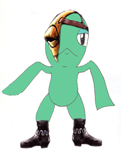

Seeker Traditions
The Leader of the Seekers
Wise Old Coolia: Each Seeker village has a leader who the people look up to and follow. When a new leader is needed, the previous leader choses a worthy seeker to be mentored in the ways of leadership. "Shadow Eye" is the title given to the one who leads the village. His potential and his identity are always hidden.  Shadow Eye: Look, I'm the new leader of the Seekers!
Wise Old Coolia: Where did you find those clothes!
Gash: Hay you little #$%, come back here with my mask, and shoes!
|
Gash: the leader of the Seekers. |
Lundi: Gashe's previous mentor. |


|
The Sending of Souls
Wise Old Coolia: A traditional Seeker funeral involves a guardian, or healer, who sends the souls of the dead back to the heavens. The bodies are wrapped in cloth and are then burned in the holy flames of the Gods. These great flames send their souls upward to the heavens, where they will find peace.
Young Energetic Coolia: That's pretty sad. Look at those massive flames!
(The massive flames burn the bodies of the dead.)
Wise Old Coolia: Hay, something smells good. Do you smell that?
Young Energetic Coolia: Yeah, your tail is on fire!
Wise Old Coolia: What, I need to retire. What are you talking about? Why you disrespectful.....
Wise Old Coolia: OH MY GOD, MY TAIL IS ON FIRE!!!
|
The bodies are being prepared to be sent to the heavens. |
Everyone gathers around the fire to say goodbye to their lost friends and loved ones. |


|
The Seeker Warrior
Wise Old Coolia: When a Seeker is old enough, he undergoes training to learn the way of the warrior. He becomes an apprentice quester, developing various defensive and offensive skills, to ready himself for battle. His main goal is to protect the strong hold of the Seekers, and to do battle against the ancient horrors of the past. Young Energetic Coolia: Man, I bet I could be the greatest quester of all time, if I had the chance!
Wise Old Coolia: DON'T GET ANY CRAZY IDEAS NOW!
Young Energetic Coolia: What are you talking about, I wasn't getting any crazy ideas (smiles).
|
When a seeker is old enough, he will undergo training to become a quester. |
This seeker warrior stands true and proud. |